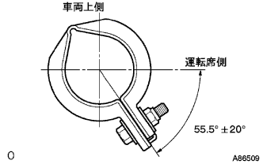
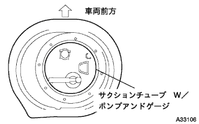
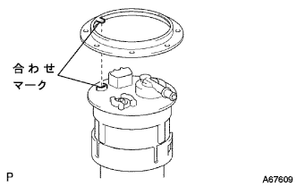

フユーエルタンクASSY 取り付け |
| 1. フューエル タンクASSY取り付け |
ボルト４本で、フユーエルタンクASSYを取り付ける。
フユーエルタンクプロテクタNo.1を取り付ける。
パーキングブレーキケーブルのクランプを取り付ける。
| 2. フューエルエミッション チューブ NO.1接続 |
パイプとコネクタの軸を合わせて[カチッ]と音がするまで挿入する。
| 3. フューエルタンク メインチューブ接続 |
パイプとコネクタの軸を合わせて[カチッ]と音がするまで挿入する。
| 4. フューエルタンク ツウ フィラパイプ ホース接続 |
| 5. ブリーザチューブフューエルホースNo.1接続 |
| 6. エキゾーストパイプASSY FR取り付け |
ノギスを使用して、コンプレッションスプリングの自由長を測定する。
 |
新品のガスケットを木片およびハンマーを使用して、エキゾーストマニホールドの面一まで徐々に打ち込む。
エキゾーストマニホールドにエキゾーストパイプASSY FRを取り付ける。
新品のガスケットを介して、エキゾーストパイプASSY FRにテールパイプを差し込む。
|  |
新品のクランプおよびボルトでクランプを図の位置にし、ボルトを締め付ける。
エキゾーストパイプサポートNo.4を2個取り付ける。
| 7. フユーエルサクシヨンチユーブASSY W/ポンプ&ゲージ取り付け |
|  |
新品のガスケットを介して、フユーエルサクシヨンチユーブASSY W/ポンプ&ゲージを取り付ける。
| 8. フューエルタンクベントチューブセット プレート取り付け |
|  |
フユーエルサクシヨンチユーブASSY W/ポンプ&ゲージおよびフユーエルタンクベントチユーブセツトプレートのマークを合わせ、ボルト８本でフユーエル タンク ベント チユーブセツト, プレートを取り付ける。
| 9. フューエルエミッション チューブ NO.1接続 |
パイプとコネクタの軸を合わせて[カチッ]と音がするまで挿入する。
接続後、コネクタとパイプを引っ張り、確実に組み付けられていることを確認する。
| 10. フューエルタンク メインチューブ接続 |
 |
メインチユーブをサクシヨンプレートのプラグに差し込み、チユーブジヨイントクリツプを取り付ける。
| 11. リヤフロアサービスホール カバー取り付け |
新品のブチルテープを使用して、リヤフロアサービスホールカバーを取り付ける。
| 12. リヤシートクッションASSY取り付け（リヤシートクッション固定タイプ） |
リヤシートクッションASSY後部のフックをかん合させる。
リヤシートベルトを、リヤシートクッションカバー & パッド後部のゴムバンドに通す。
 |
リヤシートクッションASSY前部のフックをかん合させる。
| 13. リヤシートバックASSY取り付け（リヤシートバック一体可倒式） |
ボルト2本をでリヤシートバックASSYを取り付ける。
 |
クリップ2個を取り付ける。
| 14. 燃料漏れ点検 |
参照| 15. 排気ガス漏れ点検 |